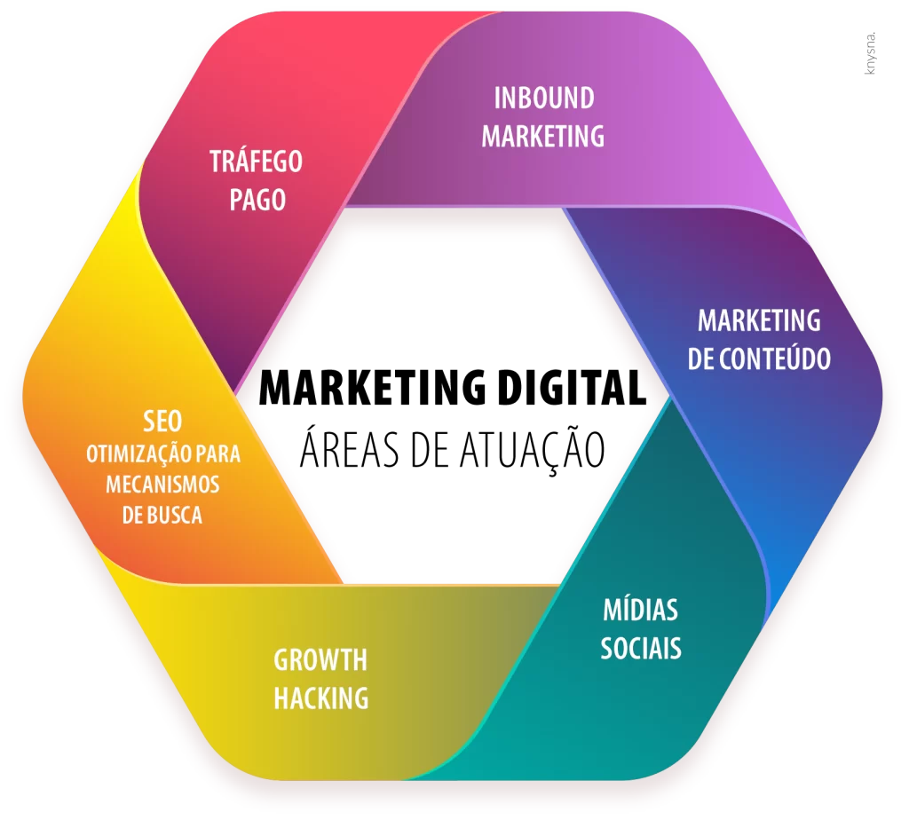

Área de Atuação
As áreas de atuação no curso de Marketing são:
- Assistente de Marketing: Auxiliar na implementação de estratégias de marketing, organizar eventos, criar conteúdo para campanhas, e colaborar na gestão das redes sociais.
- Analista de Pesquisa de Mercado: Coletar, analisar e interpretar dados para auxiliar na tomada de decisões estratégicas de marketing.
- Coordenador de Marketing: Gerenciar equipes, elaborar estratégias de marketing, planejar campanhas e garantir a execução eficaz das atividades de marketing.
- Gestor de Mídias Sociais: Gerir e administrar as redes sociais de uma empresa, planejando e executando estratégias de engajamento e interação com o público.
- Consultor de Marketing: Prestar consultoria para empresas sobre estratégias de marketing, auxiliando na otimização de seus processos e no alcance de seus objetivos de negócio.
- Gerente de Produto: Responsável pela gestão e estratégias de um determinado produto, desde o seu desenvolvimento até a sua comercialização.
